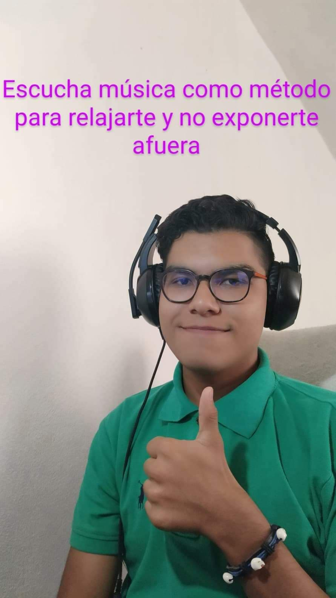
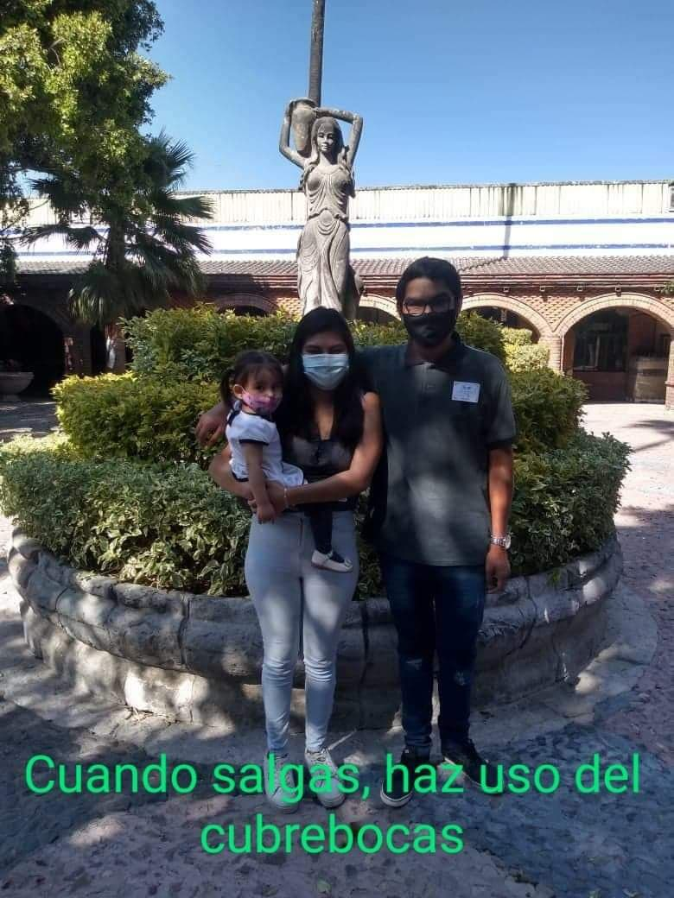
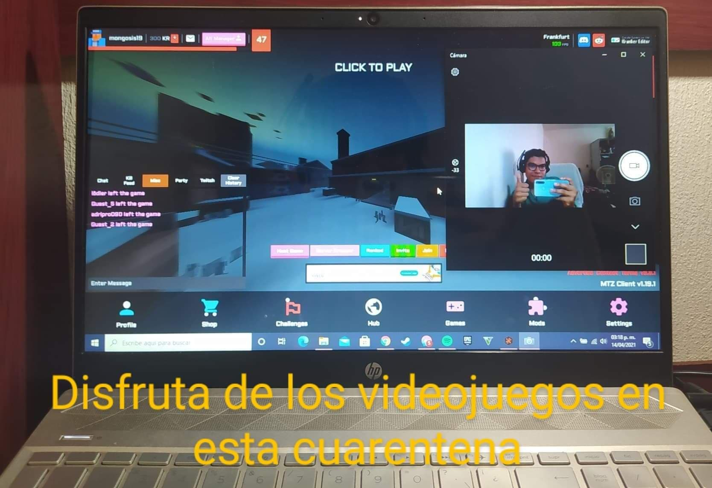
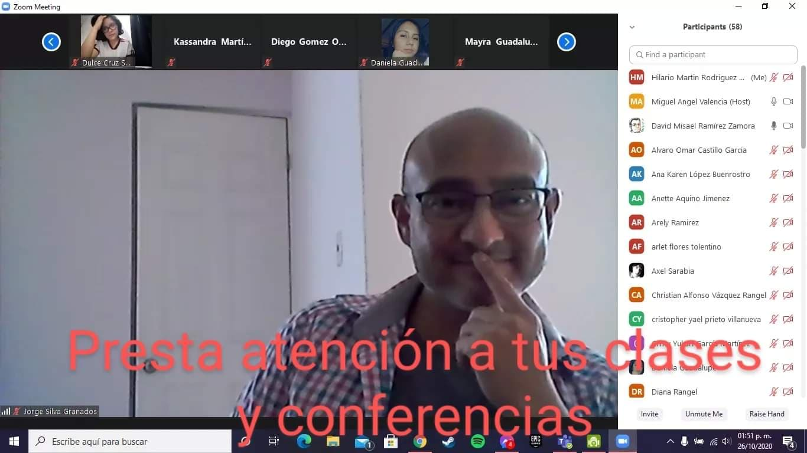
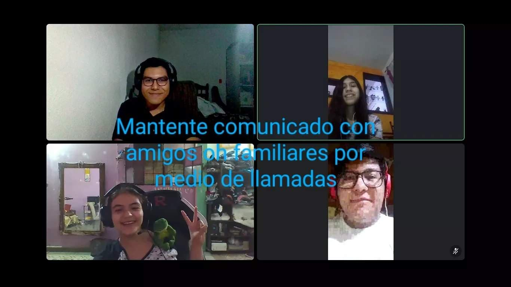
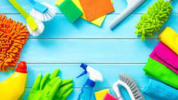
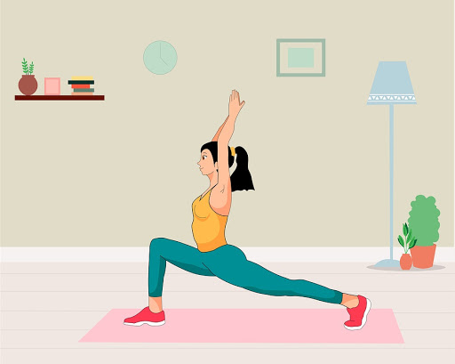
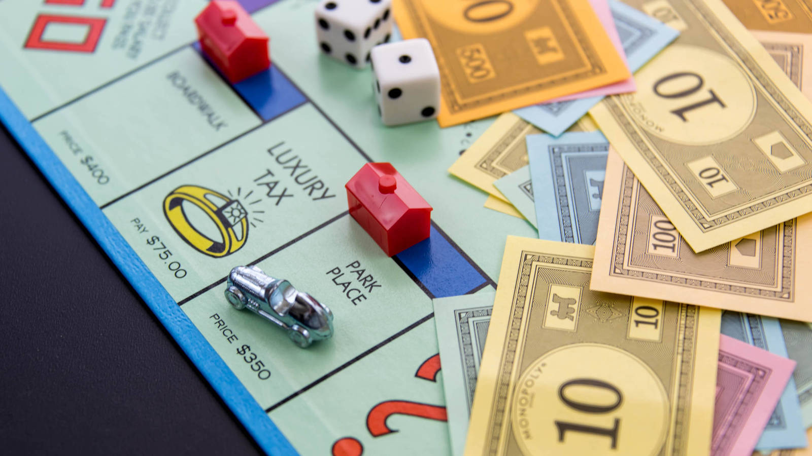

Distanciamiento Social
Recomendaciones para esta cuarentena:
Escuchar Musica Relajante
Escuchar musica que sea de tu agrado te relaja bastante bien, ademas de solo relajarte puede llegar a hacer que te concentres mas para aprender o estudiar asi que es recomendable que escuches musica que te agrade, en recomendacion creo que es bastante bueno que escuches mas en general alguna cancion relajante.

Salir Con Cubrebocas
Considerando lo que estamos viviendo, no es recomendable salir si no hay necesidad, pero en lo personal considero que si es una necesidad salir para divertirse como se mjuestra en la imagen, salir pero no en grandes multitudes, sino que en familia y a lugares poco transitados como se puede ver en la imagen en la que permanecemos en un parquesito con muy poca gente.

Jugar Videojuegos
Jugar videojuegos talves sea considerada una forma de distraerte en gran medida si no te sabes controlar, pero no solo para distraerte y perjudicarte sirven ya que hay algunos videojuegos que resultan de aprendizaje jugarlos, ademas jugar videojuegos desde la comodidad de nuestras casas nos ayuda a no exponernos inecesariamente en el exterior con el coronavirus.

Atender Clases Virtuales
En lo personal considero que esto es un punto muy importante, ya que con esto de la contingencia por el covid19 tuvimos que adaptarnos a las medidas sanitarias y sircunstancias, obligandonos a perjudicar un poco el aprendizaje, aunque no totalmente ya que gracias al internet no descuidamos del todo nuestro aprendizaje, asi que deberias atender en todo momento tus clases.

Comunicacion
La comunicacion es un aspecto sumamente importante en los seres humanos, porque tenemos sentimientos y necesidades, por lo que resulta de suma importancia permanecer en contacto con amigos y familiares, asi que te recomiendo hecharte una llamada con algun familiar o amigo para sentirte mas en compañia.

Usar Redes Sociales
Esto a veces resulta perjudicial si es que las llegamos a usar para mal, pero si las usamos para bien resultan una gran herramienta de comunicacion y diversion como podemos ver con la siguiente publicacion de mi muro personal, y ademas creo que no solo puede llegar a servir para esto, sino que creo que puede servir incluso para el ambito academico, ya que podemos realizar llamadas informativas por esta aplicacion o mostrar avisos como en el caso de la pagina oficial del Cetis62.
Actividades Del Hogar
Considero que como realizamos actividades de diversion y aprendizaje, es de suma importancia la limpieza, asi que tambien es de suma importancia realizar labores de limpieza en nuestras casas o por lo menos ayudar en estas, como limpiar nuestra area de trabajo, limpiar nuestros dormitorios, cocinas, habitaciones en general.

Aprender A Tocar Algun Instrumento
Esto es bastante util para pasar el tiempo ya que ademas de quitarnos un poco el aburrimiento, tambien refuerza nuestro aprendizaje, en especial algun instrumento que requiera mucha habilidad como puede ser la guitarra, el violin o cualquier otro instrumento. Por lo menos yo desde que inicio la cuarentena e iniciado con esta practica y me a ayudado bastante.
Hacer Ejercicio
Realizar ejercicio nos beneficia bastante, ya no solo para mantenernos en forma o adquirir nuevas habilidades fisicas, tambien esto nos beneficia de tal forma que adquirimos mañas para asi mejorar, el realizar ejercicio nos activa mas para realizar mas actividades como pueden ser en el higar o en el ambito academico.

Juegos De Mesa
Esto es bastante util si lo que quieres es divertirte en familia o con amigos, ya que jugar juegos de mesa es muy entretenido y ademas estos juegos lo que los caracteriza es que mejora bastante algunas habilidades sociales o mentales, como usar un memorama, o jugar monopoly para asi mejorar tus habilidades negociantes 🤑🤑.
